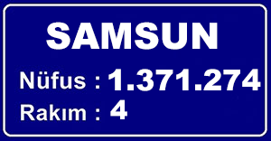

nüfus
Samsun nüfusuna dair saptamalar Osmanlı devrinden itibaren vergi mükelleflerinin ve miktarının tespit edilebilmesi amacıyla tutulan tapu tahrir defterlerine
dayanılarak yapılabilmektedir. Ancak bu defterlerde yalnızca erkek hane reisi ve erkek çocukların kaydı tutulduğundan kesin bir veri elde edilememekte
olup yaklaşık nüfus tahminleri yapılabilmektedir. Bu tahminlere göre 1485'te 70-80 bin bandında olan şehir nüfusu 1520'de 67-76 bin seviyesine inmiş,
56 yıl sonra ise Anadolu'daki diğer yerleşimlere paralel olarak 110-125 bin bandına çıkmıştır. 1831 yılında tamamlanan ilk nüfus sayımında da yine kadınlar sayılmamış,
1893 Osmanlı İmparatorluğu nüfus sayımına kadın, çocuk ve yaşlıların da nüfus bilgilerine dâhil edilmesiyle ilk kesin veriler elde edilmiştir. 1831'de 55.743 erkek nüfusu bulunan
Samsun 1869'da 182.154, 1901'de 323.758, 1914'te ise 393.292 kişiye ulaşmıştır. Nüfusun özellikle 19. yüzyılda hızla artmasının en önemli sebebi Rusya'nın politikaları
sonucu Balkanlar, Kafkasya ve Kırım'da meskûn halkın Anadolu içlerine göç etmeye zorlanmalarıdır. Bu dönemde hem iskân noktası hem de Karadeniz yoluyla Anadolu içlerine geçiş kapısı
olarak işlev gören Samsun 1912'de 4 bin Rumelili göçmen almış, I. Dünya Savaşı sırasında Rusların Trabzon'u ele geçirmeleriyle ise buradan gelen göçmen sayısı 100 bini aşmıştır.
Cumhuriyet döneminde mübadele ile 22.668 Rum'un Yunanistan'a gönderildiği, 32.290 mübadilinse iskân edildiği Samsun'da yapılan ilk nüfus sayımına göre değişen idari sınırların da etkisiyle
yaşayan kişi sayısı önceki sayımlardan daha az, 274.065 kişi çıkmıştır.
Adrese Dayalı Nüfus Kayıt Sistemi'nin 2020 verilerine göre 1.371.274 kişilik nüfusuyla Samsun, Karadeniz Bölgesi'nin en yüksek nüfuslu ilidir.
En fazla nüfusa sahip olan ilçesi İlkadım olup ardından Atakum ve Bafra gelmektedir. En az nüfusa sahip olan ilçesi ise 8.592 kişilik nüfusu ile Yakakent'tir.
2018 yılında 48.543 göç veren Samsun buna karşın 53.228 göç almış, %3,5 net iç göç hızı ile 4.685 kişi il nüfusuna eklenmiştir. Samsun'un en fazla göç
verdiği il 8.263 kişi ile İstanbul olurken en fazla göç aldığı il ise 15.794 kişi ile yine İstanbul olmuştur. Yine 2017 yılında 16.807 kişinin doğduğu şehirde 8.700 kişi ölmüş,
net nüfus artışı 8.107 kişi olmuştur. Yıllık nüfus artış hızı ‰9,6 ile Türkiye ortalamasının altında olan Samsun nüfusunun 2023 yılında 1.389.725 olacağı öngörülmektedir.
Sahip olduğu 9.725 km² yüzölçümü ile Türkiye'nin %1,25'lik kısmına tekabül eden ildeki nüfus yoğunluğuysa km² başına 151 kişidir.
Nüfusunun 678.072'sini erkeklerin, 693.202'sini kadınların oluşturduğu ildeki yaş ortalaması 36,6'dır.